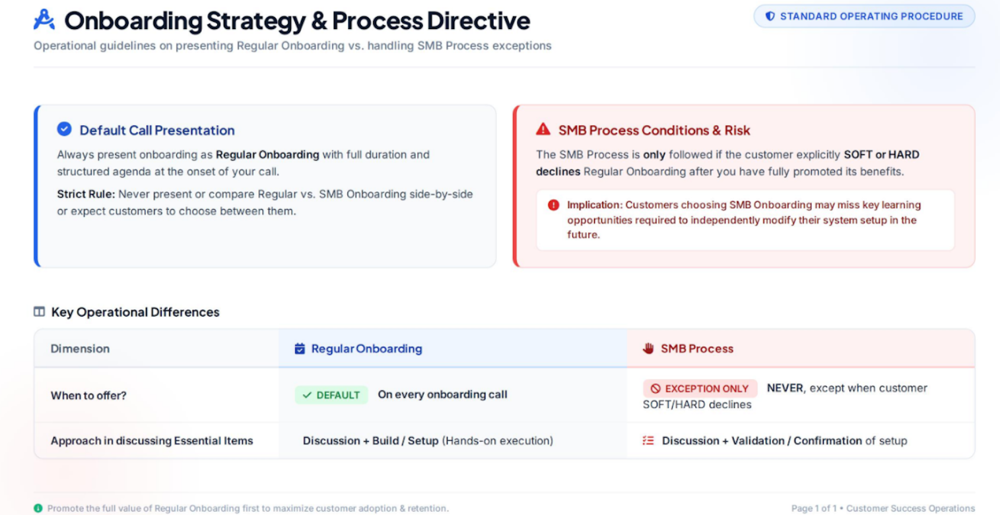

Welcome to GSP TO Onesource
This is your centralized hub for partner updates, quality assurance tools, and process workflows. Click any menu item above to navigate smoothly across sections.

What is GSP TO Onesource?
Given RingCentral GSP's global mandate to deliver localized communications solutions across diverse provider environments, customized partner support is a core operational requirement. The OneSource platform is designed to elevate our existing support framework by streamlining how partner-specific business requirements are translated and communicated to technical onboarding advisors.
Key Operational Value Drivers
- Streamlined Technical Delivery: Standardizes the intake and translation of complex client business needs into clear, actionable technical specifications.
- Tailored Support at Scale: Enables dedicated, customized partner alignment without compromising global deployment velocity.
- Enhanced Advisor Enablement: Equips technical onboarding teams with structured, centralized insights to accelerate time-to-value for enterprise partners.
This initiative optimizes communication channels between business and technical stakeholders, ensuring consistent execution across complex global deployments.

Our Leader

Miky leads the team with an optimistic, vision-driven approach, aiming to standardize and maximize the viability of RingCentral’s partner relations.
She is supported by Associate Managers CJ Verzosa-Maglaque and Kristian Mejorada, along with Team Leaders Francis Gajasan, Krison Castillo, and Abilene Eclevia.
To maintain the highest quality in partner onboarding, she handpicked top talents Philip Burce and Carlo Camacho to drive the process.
Manning the Data Analysis is Arvin Acosta.
The Organizational Chart

GSP Bulletin
Content and updates for the GSP Bulletin section will be displayed here.
Appreciation Wall
A place to celebrate wins and give kudos across the team.

Arvin Acosta has been with Ringcentral for over 5 years and had been consistent with performing above average for his role. With Arvin's expertise, GSP TO unit has been delivering its expected results
Your hard work and dedication is deeply appreciated!
Arvin, keep up the good work 👌
Victor Villanueva has been simply amazing on all facets of being an RRT for GSP Technical Onboarding. Victor is very technically adept in Ringcentral products so basically that makes himself a walking onesource 😁
His hard work has been remarkable which bestowed him once that coveted Ringcentral Excellence award. He truly deserved that!
Victor, please keep it that way. You have no idea how much you inspire us!

AT&T Office At Hand
Resources, documentation, and tools for AT&T Office At Hand.
AT&T Office At Hand History
AT&T Office@Hand is a cloud-based Unified Communications as a Service (UCaaS) platform provided by AT&T in partnership with RingCentral. It serves as AT&T’s lead offering for business voice, video conferencing, team messaging, and contact center solutions, running directly over AT&T’s mobile, fiber, and SD-WAN networks.
Key Milestones & Evolution
-
Partnership Foundations & Early Growth (2011–2018)
- Pioneering Strategic Alliance: AT&T was one of RingCentral’s earliest major service provider partners, creating AT&T Office@Hand to transition business customers away from legacy copper landlines and hardware-heavy PBX systems.
- Enterprise Expansion (2018): AT&T and RingCentral extended their agreement to bring mobile-first cloud communications to large enterprises and regulated vertical sectors (such as government, healthcare, and finance) through AT&T’s direct and indirect sales channels.
-
Lead UCaaS Offering & Portfolio Streamlining (2019–2022)
- Primary UCaaS Solution (2019): In November 2019, AT&T designated Office@Hand as its lead offer for UCaaS across its broad Voice and Collaboration portfolio.
- Network & App Integration (2020–2021): AT&T integrated Office@Hand with its 5G, Fiber, and SD-WAN infrastructures to ensure lower latency and higher call quality. They also enhanced video meeting capabilities and embedded deep integrations with Microsoft Teams and Google Workspace.
- Portfolio Consolidation (2022): AT&T streamlined its business communications strategy, consolidating multiple resale partnerships to make Office@Hand its primary white-labeled cloud communications engine for business clients.
-
AI & Omnichannel Contact Center Expansion (2025–Present)
- AI-Powered Contact Center Launch: AT&T expanded the Office@Hand portfolio by integrating RingCentral’s RingCX (an AI-first omnichannel contact center) and RingSense / ACE (conversational intelligence and speech analytics).
- Unified Agent Experience: The upgrade enabled businesses to combine front-office team messaging and back-office contact center agents under a single solution powered by generative AI call routing, automated sentiment analysis, and real-time coaching tools.
- For AT&T: Allows the telecom giant to provide a feature-rich, cloud-native communication stack deeply integrated with its nation-wide wireless, 5G, and enterprise fiber infrastructure without building proprietary UCaaS software.
- For Business Customers: Delivers a single-bill solution combining AT&T connectivity and support with RingCentral’s enterprise cloud phone, video, messaging, and AI contact center platform.
Core Value Proposition
Brightspeed Voice +
Resources and updates for Brightspeed Voice +.
Brightspeed Voice+ History
Brightspeed Voice+ is a cloud-based Unified Communications as a Service (UCaaS) solution offered by Brightspeed in strategic partnership with RingCentral.
Continuing the trend seen with other major regional carriers (like Frontier with RingCentral, TELUS Business Connect, and AT&T Office@Hand), Brightspeed pairs RingCentral's cloud communications software with its high-speed fiber-optic network across its 20-state operating footprint.
Key Milestones & Evolution
1. Carrier Formation (October 2022)
- Creation of Brightspeed: Brightspeed was officially established in October 2022 after private equity firm Apollo Global Management acquired Lumen Technologies’ incumbent local exchange carrier (ILEC) assets for $7.5 billion.
- Fiber Overhaul Target: Operating as the nation’s fourth-largest fiber broadband builder, Brightspeed launched a multi-billion dollar initiative to replace legacy copper networks with high-speed fiber internet for millions of residential and business customers.
2. Official Product Launch (April 2024)
- Strategic Partnership with RingCentral: On April 2, 2024, Brightspeed officially announced the launch of Brightspeed Voice+ powered by RingCentral.
- Integrated Suite: The product was created to give enterprise, mid-market, and small business clients an all-in-one suite combining cloud telephony, HD video meetings, team messaging, eFax, and cloud storage into a single platform.
- API & Workflow Flexibility: Brightspeed Voice+ was equipped with RingCentral's open APIs, enabling deep integration with popular enterprise applications like Salesforce, Microsoft Teams, Google Workspace, ServiceNow, and Zendesk.
3. AI Capabilities & Connectivity Bundling
- AI-Powered Collaboration: From launch, Brightspeed Voice+ incorporated RingCentral's conversational AI features, including automated transcription, real-time meeting summaries, and advanced analytics for IT administrators.
- Broadband Integration: Brightspeed bundled Voice+ with its symmetrical Dedicated Internet Access (DIA) and Business Fiber solutions, providing business clients with single-provider billing and quality-of-service support.
Core Value Proposition
- For Brightspeed: Allowed the newly formed telecom carrier to quickly go to market with an enterprise-grade UCaaS and AI collaboration platform without spending years developing proprietary cloud softswitch software.
- For Business Customers: Delivered a modern, reliable cloud communication system running over Brightspeed's fiber network, supporting remote and hybrid workforces with flexible hardware (such as Poly IP desk phones) and cloud app access.
BT Cloudwork
Resources and documentation for BT Cloudwork.
BT Cloudwork History
BT Cloud Work(originally launched as BT Cloud Phone) is a cloud-based Unified Communications as a Service (UCaaS) solution provided by BT (British Telecommunications) in strategic partnership with RingCentral.
As one of RingCentral’s longest-standing international telecom partnerships, BT leverages RingCentral’s cloud communications stack to deliver voice, video, team messaging, and contact center services to businesses across the United Kingdom.
Key Milestones & Evolution
1. Partnership Foundations & Launch as "BT Cloud Phone" (March 2015)
- Initial Agreement: BT teamed up with RingCentral on March 10, 2015, to introduce BT Cloud Phone to UK businesses.
- Transitioning from Legacy Copper: Designed primarily for small and medium-sized businesses (SMBs), BT Cloud Phone was created to transition UK business clients off legacy PBX hardware and traditional landlines toward cloud-based IP telephony.
- Core Capabilities: The original service delivered integrated business phone numbers, virtual auto-attendants, HD video conferencing, and desktop/mobile app synchronization.
2. Enterprise Expansion & Rebranding to "BT Cloud Work" (September 2018)
- Rebranding & Portfolio Upgrade: On September 12, 2018, BT rebranded and extended the service to BT Cloud Work to target mid-market and large enterprise customers.
- Enterprise Features: The expanded solution added persistent team messaging, advanced call routing, and deep software integrations with enterprise tools like Microsoft 365, Salesforce, and Google Workspace.
- PSTN Switch-Off Alignment: BT leveraged Cloud Work as a primary migration path for businesses preparing for the UK's nationwide ISDN and PSTN copper line retirement.
3. Contact Center Addition & Microsoft Teams Deepening (2020–2022)
- Cloud Work Contact Centre (CCaaS): BT expanded its partnership by designating BT Cloud Work Contact Centre as a lead offering in its broader contact center portfolio, combining back-office cloud voice with omnichannel customer service tools.
- Microsoft Teams Integration: BT and RingCentral introduced direct integration with Microsoft Teams, enabling UK organizations to use BT Cloud Work’s cloud PBX and routing features within their existing Teams interface without requiring extra native calling licenses.
4. AI Capabilities & Next-Gen CCaaS (RingCX)
- AI-Powered Contact Center (RingCX Integration): BT integrated RingCentral's RingCX into the BT Cloud Work suite.
- Conversational AI Features: The updated platform features generative AI capabilities (powered by RingSense/ACE), providing automated post-call summaries, real-time agent assistance, real-time sentiment analysis, and 250+ pre-built analytics dashboards.
Core Value Proposition
- For BT: Allows the UK’s primary telecommunications provider to offer a mature, globally recognized UCaaS and CCaaS cloud platform without building or maintaining proprietary softswitch software.
- For UK Businesses: Combines RingCentral's feature-rich collaboration tools with BT’s nationwide network security, localized UK billing, 24/7 UK-based helpdesk support, and guidance through the UK landline switch-off.
COX Business Connect
Resources and updates for COX Business Connect.
COX Business Connect History
Cox Business Connect with RingCentral is a cloud-based Unified Communications as a Service (UCaaS) solution provided by Cox Business (the commercial division of Cox Communications) in strategic partnership with RingCentral.
Much like other major telecom collaborations (such as Frontier with RingCentral, TELUS Business Connect, and AT&T Office@Hand), Cox Business leverages RingCentral’s cloud PBX and collaboration platform to power its modern business phone, video meeting, and messaging services over Cox's high-speed fiber network.
Key Milestones & Evolution
1. Partnership Launch & Legacy PBX Modernization
- Strategic Alliance: Cox Business teamed up with RingCentral to transition its commercial customer base away from traditional on-premise PBX hardware and legacy landlines to a cloud-native communication stack.
- All-in-One Cloud Suite: Launched as Cox Business Connect with RingCentral, the unified app consolidated business phone calling, SMS/MMS texting, internet eFaxing, video meetings, and persistent team messaging into a single desktop and mobile interface.
- Fiber & Connectivity Bundling: Cox integrated RingCentral's platform directly with its high-speed Cox Business Internet and network backup solutions (Net Assurance), offering bundled pricing and discounted internet tiers for businesses adopting cloud voice.
2. Deep App Integration & Compliance Expansion
- Ecosystem Connectivity: Cox integrated the platform with major CRM and productivity tools—such as Salesforce, HubSpot, Microsoft Teams, and Google Workspace—enabling automated call logging, click-to-dial, and streamlined customer workflow management.
- A2P SMS Compliance: As carrier messaging regulations tightened, Cox integrated The Campaign Registry (TCR) compliance workflows into the platform, ensuring business SMS/MMS messaging remained reliable and compliant with industry spam standards.
3. Contact Center & AI Innovations
- Omnichannel Contact Center (RingCX Integration): Cox expanded its portfolio beyond standard UCaaS by offering Contact Center with RingCentral (RingCX), enabling mid-market and enterprise businesses to manage customer interactions across voice and digital channels.
- AI & Advanced Analytics: The platform incorporates conversational AI tools, real-time call transcriptions, automated meeting summaries, and advanced analytics portals (Business Analytics Pro) to give administrators actionable insights into call performance and quality metrics.
Core Value Proposition
- For Cox Business: Enables the cable and fiber broadband provider to offer a top-tier, feature-rich cloud software platform without needing to build or maintain a proprietary UCaaS infrastructure from scratch.
- For Commercial Customers: Delivers enterprise-grade collaboration and phone capabilities on a single Cox bill, backed by local 24/7 technical support and high-reliability broadband connection.
Frontier with Ringcentral
Resources and guidance for Frontier with RingCentral.
Frontier with Ringcentral History
The partnership between Frontier Communications and RingCentral was established to deliver integrated cloud communications and high-speed fiber internet solutions, primarily targeting small-to-medium businesses and enterprise clients.
Key Milestones & Evolution
1. Official Partnership Launch (March 2022)
- Strategic Announcement: On March 3, 2022, Frontier Communications teamed up with RingCentral to introduce an all-in-one unified communications package.
- Core Product Bundle: The collaboration combined RingCentral’s flagship MVP® (Message, Video, Phone) cloud communication suite with Frontier’s high-speed symmetrical fiber-optic internet (including multi-gigabit capabilities).
- Target Audience: Designed to support hybrid and remote working models for small-and-medium-sized businesses (SMBs) across Frontier's nationwide fiber footprint.
2. Service Integration & Expansion (2022–Present)
- Co-Branded Offerings: The partnership expanded to include Frontier with RingCentral, providing single-sign-on portals, dedicated analytics, and video conferencing tools tailored for business customers.
- Dedicated Internet Access (DIA) Integration: Frontier paired RingCentral's UCaaS (Unified Communications as a Service) platform with Dedicated Internet Access to guarantee uptime and 24/7 network monitoring for enterprise users.
- Enhanced Features: Expanded features introduced through the joint offering include Push-to-Talk (PTT) capabilities, flexible hardware purchasing/rental programs, and integrations with enterprise productivity software (e.g., Microsoft and Google suites).
Strategic Goals
- For Frontier: Allowed the telecom provider to bundle value-added cloud software directly with its expanding fiber network rollout ("Building Gigabit America") without having to build a proprietary UCaaS platform from scratch.
- For RingCentral: Expanded market reach into Frontier's extensive commercial customer base across urban and underserved regional markets.
RC UK
Specific documentation and updates for RingCentral UK.
Ringcentral UK History
RingCentral UK (officially registered as RingCentral UK Ltd.) serves as the European operational hub for RingCentral, Inc. Its expansion into the UK played a pivotal role in establishing the company as a global Unified Communications as a Service (UCaaS) and Contact Center as a Service (CCaaS) leader.
Key Milestones & Evolution
1. Incorporation & Market Entry (2008–2009)
- Official Incorporation: RingCentral UK Ltd. was formally incorporated in London in October 2008.
- UK Expansion: By 2009, RingCentral established a physical presence and sales operations in the UK, adapting its cloud PBX tools to support local UK telephone numbering, billing, and regional compliance standards.
2. Strategic Partnership with BT (2014–2015)
- Landmark Carrier Deal: In March 2015, RingCentral signed a landmark strategic agreement with BT (British Telecommunications) to launch BT Cloud Phone.
- Mass Adoption: The partnership gave RingCentral access to BT’s vast commercial customer base across the UK, positioning cloud communications as the primary replacement for legacy copper and ISDN lines.
3. European Expansion & Global Office Launch (2016–2018)
- RingCentral Global Office (2016): RingCentral launched Global Office out of its UK headquarters, allowing UK-headquartered multinationals to extend their cloud communication infrastructure across international offices under a single management system.
- BT Cloud Work Rebrand (2018): Building on their initial success, BT and RingCentral expanded their offering to mid-market and enterprise accounts, rebranding the joint solution to BT Cloud Work.
4. UK PSTN Switch-Off Acceleration & Enterprise Growth (2019–2023)
- The Copper Sunset: As BT announced the upcoming retirement of the UK’s legacy PSTN/ISDN copper network, RingCentral saw rapid adoption as UK businesses moved to IP-based cloud communications.
- Public Sector & High-Profile Customers: RingCentral secured major UK clients across retail (such as Lush), healthcare, education (e.g., Girls' Day School Trust), and local government.
- Omnichannel CCaaS Expansion: RingCentral expanded beyond UCaaS in the UK, introducing integrated contact center capabilities to support customer service operations.
5. AI Integration & European Market Modernization (2024–Present)
- AI-First Contact Center (RingCX): RingCentral rolled out its native AI contact center, RingCX, across the UK and key European markets, offering localized UK English natural language processing, automated interaction summaries, and agent-assist tools.
- Autonomous Front-Desk Support (RingCentral AIR): Rolled out advanced conversational AI voice agents (AIR) and Microsoft Teams deep integrations for UK enterprise customers seeking unified voice, meeting, and routing tools.
Core Value Proposition in the UK
- European Gateway: Serves as RingCentral's headquarters for EMEA (Europe, Middle East, and Africa) expansion.
- Migration Engine: Acts as a primary solution for UK businesses replacing legacy landlines ahead of the nationwide PSTN/ISDN switch-off.
- Strategic Ecosystem: Supported by direct carrier partnerships (BT), a local channel partner network, and dedicated UK-based data residency and compliance infrastructure.
Telus Business Connect
Resources and documentation for Telus Business Connect.
Telus Business Connect History
TELUS Business Connect is a cloud-based unified communications service offered by TELUS(one of Canada’s leading telecommunications providers) in strategic partnership with RingCentral.
Similar to other major carrier partnerships (such as Frontier with RingCentral), TELUS leverages RingCentral’s cloud PBX and collaboration platform to power its flagship business phone and contact center offerings.
Key Milestones & Evolution
1. Partnership Foundation & Launch (2014–2015)
- Strategic Alliance: TELUS teamed up with RingCentral to replace legacy landline and hardware-heavy PBX systems with a mobile-first, cloud-based Unified Communications as a Service (UCaaS) solution.
- Product Rollout: Launched under the name TELUS Business Connect, the platform brought together voice, video conferencing, audio meetings, and team messaging into a single interface.
- Mobile & SMB Focus: They later expanded entry-level offerings like Business Connect Mobile, giving small and medium-sized businesses (SMBs) access to enterprise-grade auto-attendants, call routing, and virtual business numbers without needing expensive on-premise hardware.
2. Ecosystem Expansion & Upmarket Growth (2016–2023)
- Software Integrations: TELUS integrated Business Connect deeply into popular enterprise productivity suites—including Microsoft Teams, Microsoft Outlook, Google Workspace, Salesforce, and Zoho CRM—allowing users to click-to-dial and manage communication history directly within their preferred apps.
- Mid-Market & Enterprise Scaling: While originally targeting Canadian SMBs, TELUS expanded the platform upmarket to serve mid-market clients and enterprise organizations (500 to 1,000+ seats) needing multi-location routing and dedicated contact center capabilities.
- Hybrid Work Era: During the shift toward remote and hybrid work models, Business Connect saw significant feature additions, including HD video conferencing, persistent team messaging, and desktop/mobile app synchronization.
3. AI Integration & Platform Evolution (2026)
- Advanced Conversational AI: Expanding their 10+ year partnership, TELUS and RingCentral rolled out advanced AI features for TELUS Business Connect.
- Key AI Capabilities:
- AI Receptionist (RingCentral AIR): An intelligent virtual phone agent that understands caller intent, answers FAQs, schedules appointments, and routes complex calls.
- AI Insights (RingCentral ACE): Offers real-time sentiment analysis and coaching data to help sales and service teams.
- Omnichannel AI Contact Center (RingCX): Integrates conversational AI and agent-assist tools across over 20 digital communication channels.
Core Value Proposition
- For TELUS: Allowed the carrier to innovate rapidly and offer a feature-rich, cloud-native communications suite over its high-speed network without spending years building proprietary UCaaS technology.
- For Canadian Businesses: Delivered an enterprise-grade PBX and collaboration platform with localized Canadian billing, Canadian French/English customer support, and seamless integration with TELUS mobility and internet plans.
Zayo UC+
Resources and guides for Zayo UC+.
Zayo UC+ History
Zayo UC+ (and Zayo UC+ with RingCentral) is a cloud-based Unified Communications as a Service (UCaaS) and Contact Center as a Service (CCaaS) solution provided by Zayo Group—a major global communications infrastructure and fiber provider—in strategic partnership with RingCentral.
Following the trend of major carriers (such as Frontier, TELUS, AT&T, Cox, Brightspeed, and BT), Zayo pairs RingCentral’s AI-powered communications software directly with its extensive global fiber backbone and managed networking solutions across the United States and Canada.
Key Milestones & Evolution
1. Legacy Hosted Voice & Cloud Communications
- Infrastructure Focus: Founded in 2007, Zayo established itself primarily as a bandwidth and dark-fiber infrastructure giant.
- Early UC & SIP Solutions: To serve its commercial enterprise and public sector customers, Zayo initially offered managed SIP trunking and basic cloud-hosted VoIP solutions (Zayo UC Cloud Voice) to replace aging legacy PBX systems and ISDN PRI lines.
2. Strategic Launch of Zayo UC+ with RingCentral (September 2024)
- Official Partnership: On September 9, 2024, Zayo and RingCentral formally announced a strategic partnership to launch Zayo UC+ with RingCentral.
- Core Product Suite: The partnership brought together RingCentral’s flagship cloud solutions—RingEX™ (Voice, Video, Team Messaging, Business SMS, Fax) and RingCX™ (AI-powered Omnichannel Contact Center)—with Zayo's Tier-1 network connectivity.
- Software Workflow Integrations: Built with open APIs, Zayo UC+ connects natively into business applications like Salesforce, Microsoft Teams, Google Workspace, and Zendesk.
3. Private Transport & Network Synergy (2024–Present)
- Beyond Public Internet: Unlike standard UCaaS deployments that rely solely on public internet connection, Zayo UC+ allows enterprises to route voice and collaboration traffic over Zayo’s private, high-performance network (including Managed SD-WAN, Dedicated Internet Access, and DynamicLink).
- Native AI Capabilities: Integrates RingCentral’s conversational AI (RingSense / AI Conversation Expert) for real-time call transcriptions, automated meeting summaries, and agent assistance tools.
Core Value Proposition
- For Zayo: Enables the fiber infrastructure operator to deliver a full-featured, AI-driven UCaaS/CCaaS application suite to its enterprise and mid-market clients without needing to build proprietary softswitch technology.
- For Enterprise Customers: Delivers a cloud communication platform backed by Zayo’s private network transport—ensuring predictable Quality of Service (QoS), elevated security, and consolidated single-provider management.
QA Corner Overview
Welcome to the main QA Corner section. This section shows QA Team members, achievements and initiatives.
GSP TO QA Team Members

CSAT Rockstars
Highlighting our top CSAT performers and recognition milestones.
Process Library
Standard operating procedures, reference guides, and workflow charts.
Quick Reminders
Key operational reminders, daily highlights, and priority call-outs.
Stop ⛔ Positioning SMB Onboarding At The Outset | August 7, 2026
Please avoid positioning SMB onboarding as an alternative option during your onboarding introduction. At the start of the call, present the session as a standard onboarding engagement that includes a structured agenda and designated timeframe.
The SMB process is intended only for situations where the customer explicitly soft-declines or hard-declines the onboarding, even after the value and benefits of the session have been clearly explained.
Impact to the Customer:
By choosing the SMB process, customers may not receive the full learning experience available through standard onboarding, potentially reducing their confidence and knowledge when making future changes to their system configuration.
Impact to you:
You may miss discussing QA items which can affect your QA score.
Sample Script To Counter Rejection:
"I understand you find this onboarding inconvenient but this session in fact will save you time because it will save you from trouble of calling back everytime a change needs to be done in your portal. Besides, that 45 min to 1 hr is just an estimate, I recommend we do this right now."
For more details, refer to this link : QA Guidelines for SMB Pre-configured Accounts

QA Wall of Fame
Honoring high quality standards and top audit scores.
August 2026 QA Standouts
Congratulations 🎉


QA Updates and Announcements
Latest announcements regarding quality guidelines and policy changes.
2026 Updates
August 2026 Updates
July 2026 Updates
April 2026 Updates
Quality Risk Management
Frameworks, mitigation protocols, and compliance procedures.
Key Reasons QRM Is Critical for Call Centers
1. Regulatory Compliance & Data Protection
Call centers handle sensitive personal and financial data daily (credit cards, social security numbers, health records). QRM creates checks to ensure compliance with strict industry standards like PCI-DSS, HIPAA, and GDPR.
- Risk Addressed: Unencrypted call recordings capturing card numbers, or agents failing to authenticate caller identity.
- Impact: Prevents multi-million dollar fines and legal liability.
2. Safeguarding Customer Experience (CX) & Retention
Customer acquisition costs significantly more than retention. Poor service, inaccurate advice, or long escalations directly drive customer churn.
- Risk Addressed: Inconsistent information given by different agents, high handle times caused by poor internal knowledge bases, or unaddressed customer friction points.
- Impact: Standardizes high-quality responses, protecting Customer Satisfaction (CSAT) and Net Promoter Scores (NPS).
3. Mitigating Operational Cost Vulnerabilities
Unmanaged quality issues generate unnecessary call volume and waste workforce resources.
- Risk Addressed: Low First Contact Resolution (FCR) leads to repeat calls for the same issue, artificially inflating call volume and requiring overstaffing.
- Impact: Identifying root causes through QRM reduces re-work, optimizes Average Handle Time (AHT), and lowers operational expenditures.
4. Continuous Agent Training & Attrition Reduction
Call centers frequently suffer from high turnover rates. Unclear guidelines, inadequate feedback, and fear of penalty create burnout.
- Risk Addressed: Disconnects between training programs and real-world call challenges.
- Impact: Uses QRM data to pinpoint specific skill gaps, delivering targeted coaching rather than broad criticism, which improves agent confidence and retention.
5. Managing AI & Automation Risks
Modern contact centers heavily rely on conversational AI, chatbots, and auto-summarization tools.
- Risk Addressed: AI models "hallucinating" incorrect policy details or improperly routing customer queries.
- Impact: Establishes governance frameworks to continuously audit automated pathways, ensuring bot outputs align with human compliance standards.
Core Operational Risks vs. QRM Mitigation
| Risk Domain | Potential Failure Point | QRM Preventive Action |
|---|---|---|
| Security & Privacy | Agent writes down sensitive caller information | Speech analytics auto-redaction & clean-desk audits |
| Operational | Process bottlenecks cause high Abandonment Rates | Real-time queue monitoring & dynamic routing rules |
| Knowledge / Competency | Outdated knowledge base scripts lead to bad advice | Automated knowledge audits & regular calibration sessions |
| Reputational | Mishandled escalated call shared on social media | Sentiment analysis alerts for immediate supervisor intervention |
Now that you know about the importance of QRM 🤔
Let's look at some of the common QRM infractions in GSP TO that are committed during onboarding sessions and how to prevent incurring them.
Screen Sharing Disclaimer
Screen Sharing Disclaimer
- Please close all windows or databases I shouldn't see.
- Stay on the computer all the time while on screen share.
- Changes will only be made to <BRAND> services, or any program or file, upon your approval.
- And lastly, you may stop sharing at any time you feel uncomfortable.
🚨 Reminder : It is highly suggested to adhere to the disclaimer indicated above.
Due to a lack of organization, RingCentral's mandatory screen sharing disclaimer is frequently being missed. To ensure compliance, this policy must be followed without exception whenever you initiate a screen share with a client.
You must deliver the complete 4-point disclaimer before sending a meeting link or having the customer join your session.
Common Non-Compliance Issues:
- Failing to read the disclaimer entirely.
- Omitting one or more of the required points.
- Stopping mid-disclaimer due to a customer interruption without attempting to finish it.
- Sending meeting link first. Customers who are tech-savvy sometimes get ahead.
Best Practice:
Keep a digital notepad open with the standard text. Practice reading it naturally so it sounds like a smooth, effortless part of your conversation rather than a script.
QRM Item Applicable
5. Disclaimers/ Disclosures ➡️5.2 No remote access disclaimer ➡️Level 3 ➡️ Compliance Item ➡️ Failure to provide complete critical remote monitoring/access disclaimers before initiating a remote session.
QA Forms and Versions
Downloadable evaluation forms, audit rubrics, and version history logs.
GSP TO Tools
Access productivity tools and operational utilities.
| Tool Name | Link | Tool Description |
|---|---|---|
| GSP Quick Reference Guide | GSP Quick Reference Guide | This is where you can see updated information about Brands' directories and some processes |
| GSP Account Verification Guide | GSP Account Verification Guide | Access this to know more about our established process for verifying clients using SCP |
| Timezone Setter | Timezone Setter | This is your guide when it comes to making sure you are setting up the proper timezone of your customer's location. Take Note : Always look at the details under IANA Identifier column |
| Telus Business Connect Updated Feature Matrix | Telus Business Connect Updated Feature Matrix | This is where you can access features available based on Telus Business Connect customer's plan |
| SFDC GSP TO Call Template | SFDC GSP TO Call Template | This is your guide in making sure you are able to have proper onboarding call flow as well as ensure that you are able to cover essential tasks/topics within the whole session. |
| Portability Checker | Portability Checker | Instead of directly submitting the number the customer needs to port in using Service portal, you can first use this to see if the number is portable |
| RC Support Site | RC Support Site | This is the RC's main support site. You can visit this site for some support articles that you can find helpful in supporting your customer |
| Provisioning Guide Microsite | Provisioning Guide Microsite | When it comes to provisioning, this is one of your bestfriends especially for BYOD devices. |
| Care Connect Hub | Care Connect Hub | Usually used by Technical Team, this can be a source of information for you to support your customer during your onboarding |
| RC Supported Devices (BYOD) | RC Supported Devices (BYOD) | If a customer wants to provision his BYOD, you may want to look at this first to qualify his device |
| RC 411 | RC 411 | This will take you to the RC 411 page where latest releases and updates will be found. |
| TCR Registration Checklist | TCR Registration Checklist | Access this to be guided on what pre requisites the customer must have before registering for SMS feature |
RC & Acquire Helplines
Directory of escalation pathways, support desks, and key contacts.
Links to Important Tools as Technical Onboarding Advisor
Ringcentral OKTA --- This is the tool you will use to be able to access RingCentral's organizational applications. Know this by heart!
RingCX --- This application is what you need to receive calls from our partners' clients. This is now integrated in your RC App.
Ringcentral Support Site --- A very helpful site that contains almost all the things that you need to support your onboarding sessions. Although, most brands have their own support sites but majority of their contents actually derived from this site.
Acquire Portal -- A tool that you must bookmark as this is where you login and logout or else you won't get paid. I bet you do not want that, do you?
Ringcentral Web App --- This is the web version of the RingCentral App. You can use this especially if you do not have the app downloaded on your PC or you do not have access to the mobile version on your mobile phone. This is used to communicate with colleagues within the entire organization.
Who to call when having trouble doing your job
Acquire IT --- Call this number when having issues with your Acquire issued devices like PC, headset, etc. By the way, you can also call them using your RingCentral App (Glip). You can also trigger help from them by going to Acquire portal to be able to raise a ticket.
Phone number is 855 897-3987
- RingCentral IT --- Reach out to them if you are having issues with regard to your RC-related applications or accesses like Salesforce, OKTA login, etc.
Just dial 4357in your RC App dialpad.